7210B56 R.R. BOOT/LOAD CARRYING COMPARTMENT FLOOR (PARTIAL REAR OPERATION)
- Path
- Procedures > 72 PANELS AND FRAME > 7210 REMOVING REFITTING > 7210B STRUCTURE ELEMENTS-CENTRAL AND REAR PART > 7210B56 R.R. BOOT/LOAD CARRYING COMPARTMENT FLOOR (PARTIAL REAR OPERATION)
- Kind
- repair procedure (removal / refitting; the operation number is the code)
- Applies to
- all engines; all production periods
- Interactive page
- https://sloeber94.github.io/elrnDB-fUlss/en/#/179007961
Applies to: all engines; all production periods
Applies to: all engines; all production periods
 Removing
Removing
 Refitting
Refitting- Work on the component highlighted making sure previously that the equipment illustrated below is available.
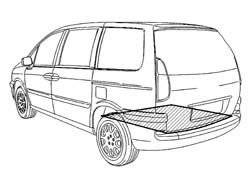
Applies to: all engines; all production periods
1. Rear floor panel.
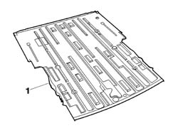
Applies to: all engines; all production periods
2. Rear base crossmember.
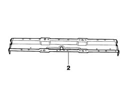
Applies to: all engines; all production periods
- Check that the components connected are not distorted by checking the bodyshell alignment measurements using suitable equipment (gauges, templates or jigs).
- Make the cuts (A) and holes in the rear floor panel as illustrated in the diagram using a power saw and an 8 mm diameter drill bit.
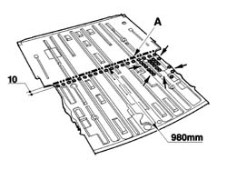
Applies to: all engines; all production periods
- Proceed with the cutting (B) as illustrated in the diagram.
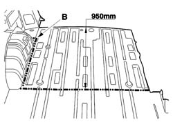
Applies to: all engines; all production periods
- Reduce the spot welds illustrated using a chamfering machine.
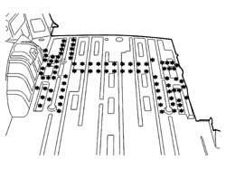
Applies to: all engines; all production periods
- Reduce the spot welds illustrated using a chamfering machine.
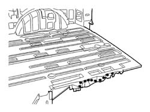
Applies to: all engines; all production periods
- Reduce the spot welds illustrated using a chamfering machine.
- Remove the spots shown in the diagram (C) using a disc grinder.
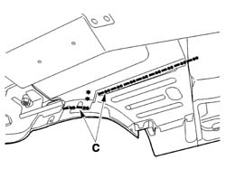
Applies to: all engines; all production periods
- Reduce the spot welds illustrated using a chamfering machine.
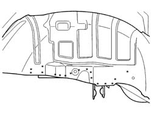
Applies to: all engines; all production periods
- Reduce the spot welds illustrated using a chamfering machine working symmetrically at the bottom on the left and right hand sides of the rear crossmember.
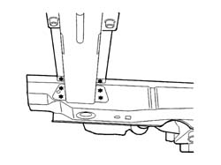
Applies to: all engines; all production periods
- Reduce the spot welds illustrated using a chamfering machine working symmetrically at the top on the left and right hand sides of the rear crossmember.
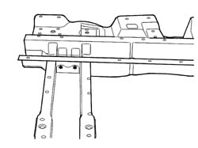
Applies to: all engines; all production periods
- Remove the residues (D) from the bodyshell using a disc grinder and apply electro-galvanizing paint.
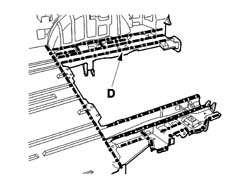
Applies to: all engines; all production periods
Refitting
Removing- Position the partial floor panel and the rear base crossmember and fasten using self-locking clamps then, after having checked that the alignment is correct, remove the floor panel and proceed with the fitting as described below.
- Remove the residues from the replacement parts using a disc grinder and apply electro-galvanizing paint.
- Carry out the welding illustrated in the diagram at the top on the left and right sides of the rear crossmember using a spot welder.
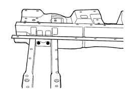
Applies to: all engines; all production periods
- Carry out the welding illustrated in the diagram at the bottom on the left and right sides of the rear crossmember using a spot welder.
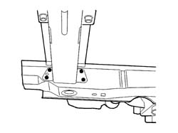
Applies to: all engines; all production periods
- Apply sealing compound in the areas shown in the diagram.
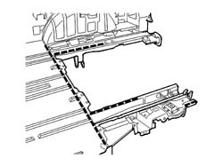
Applies to: all engines; all production periods
- Position the partial floor panel and the assembled wheel arch prepared previously and fasten with self-locking clamps and, at the same time, assemble the rear panel, the rear panel trim and the partial semi side member then, after having checked that all the components are correctly aligned, dismantle the rear panel, the rear panel trim and the partial semi side member and the assembled wheel arch.
- Fill weld in the areas shown in the diagram.
- Level the spot welds using a disc grinder.
- Apply electro-galvanizing paint.
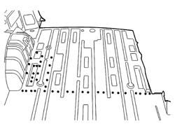
Applies to: all engines; all production periods
- Proceed with MIG welding in the areas (E) shown in the diagram and finish off in the remaining areas using a spot welder then grind the welds using a disc grinder.
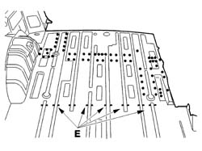
Applies to: all engines; all production periods
- Fill weld in the areas shown in the diagram.
- Level the spot welds using a disc grinder.
- Apply electro-galvanizing paint.
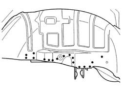
Applies to: all engines; all production periods
- Weld the side part of the floor panel as illustrated in the diagram using a spot welder.
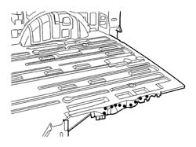
Applies to: all engines; all production periods
- Weld the lower part of the floor panel as illustrated in the diagram using a spot welder.
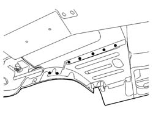
Applies to: all engines; all production periods
- Apply sealing compound in the area shown in the diagram.
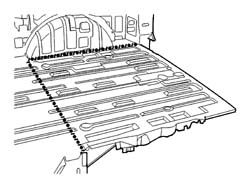
Applies to: all engines; all production periods
- Grind the welds using a disc grinder.
- Check that the welded component is correctly positioned.
- Apply electro-galvanizing paint to the ground parts.
- Proceed with waxing the box sections.